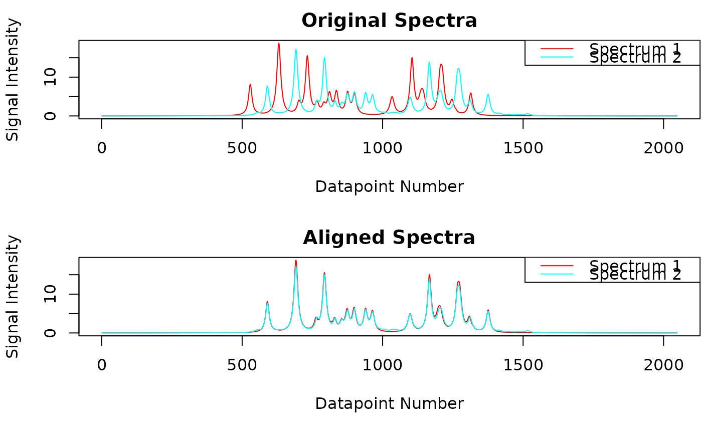

Performs signal alignment across the individual spectra using the 'speaq' package (Beirnaert C, Meysman P, Vu TN, Hermans N, Apers S, Pieters L, et al. (2018) speaq 2.0: A complete workflow for high-throughput 1D NMRspectra processing and quantification. PLoS Comput Biol 14(3): e1006018. https://www.doi.org/10.1371/journal.pcbi.1006018). The spectra deconvolution process yields the signals of all spectra. Due to slight changes in measurement conditions, e.g. pH variations, signal positions may vary slightly across spectra. As a consequence, prior to further analysis signals belonging to the same compound have to be aligned across spectra. This is the purpose of the 'speaq' package.
Usage
speaq_align(
feat = gen_feat_mat(spectrum_data),
maxShift = 50,
spectrum_data,
si_size_real_spectrum = length(spectrum_data[[1]]$y_values),
verbose = TRUE,
show = FALSE,
mfrow = c(2, 1)
)Arguments
- feat
Output of
gen_feat_mat().- maxShift
Maximum number of points along the "ppm-axis" which a value can be moved by speaq package e.g. 50. 50 is a suitable starting value for plasma spectra with a digital resolution of 128K. Note that this parameter has to be individually optimized depending on the type of analyzed spectra and the digital resolution. For urine which is more prone to chemical shift variations this value most probably has to be increased.
- spectrum_data
Output of
generate_lorentz_curves().- si_size_real_spectrum
Number of real data points in your original spectra.
- verbose
Whether to print additional information during the alignment process.
- show
Whether to plot the original and aligned spectra.
- mfrow
Layout to use for the plot. Passed on to
par(). Usemfrow = NULLif the plot layout should not be changed.
Value
A matrix containing the integral values of the spectra after alignment.
There is one row per spectrum and one column per ppm value. The entry at
position i, j holds the integral value of the signal from spectrum i that
has its center at position j after alignment by speaq. If there is no
signal with center j in spectrum i, entry i, j is set to NA. The column
names of the matrix are the ppm values of the original spectra.
Example return matrix:
Examples
sim_subset <- metabodecon_file("bruker/sim_subset")
spectrum_data <- generate_lorentz_curves_sim(sim_subset)
feat <- gen_feat_mat(spectrum_data)
maxShift <- 200
M <- speaq_align(feat, maxShift, spectrum_data, show = TRUE)
#>
#> --------------------------------
#> dohCluster will run with maxShift= 200
#> If you want dohCluster to detect the optimal maxShift automatically,
#> use dohCluster(..., maxShift = NULL, ...)
#> --------------------------------
#>
#> aligning spectrum 1
#> Median pearson correlation of aligned spectra: 0.9977223
#> Alignment time: 2e-04 minutes

str(M)
#> num [1:2, 1:2048] NA NA NA NA NA NA NA NA NA NA ...
#> - attr(*, "dimnames")=List of 2
#> ..$ : NULL
#> ..$ : chr [1:2048] "3.59" "3.58985" "3.5897" "3.58955" ...